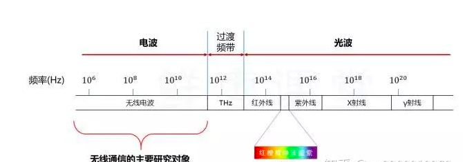

简单说，5G就是第五代通信技术，主要特点是波长为毫米级，超宽带，超高速度，超低延时。1G实现了模拟语音通信，大哥大没有屏幕只能打电话；2G实现了语音通信数字化，功能机有了小屏幕可以发短信了；3G实现了语音以外图片等的多媒体通信，屏幕变大可以看图片了；4G实现了局域高速上网，大屏智能机可以看短视频了，但在城市信号好，老家信号差。1G~4G都是着眼于人与人之间更方便快捷的通信，而5G将实现随时、随地、万物互联，让人类敢于期待与地球上的万物通过直播的方式无时差同步参与其中。
在有线介质上传播数据，速率可以达到很高的数值。 而空中传播这部分，才是移动通信的瓶颈所在。 目前主流的4G LTE，理论速率只有150Mbps。这个和有线是完全没办法相比的。
无线通信就是利用电磁波进行通信。电波和光波，都属于电磁波。 电磁波的功能特性，是由它的频率决定的。不同频率的电磁波，有不同的属性特点，从而有不同的用途。
例如，高频的γ射线，具有很大的杀伤力，可以用来治疗肿瘤。

我们目前主要使用电波进行通信。当然，光波通信也在崛起，例如LiFi。
无线电波属于电磁波的一种，它的频率资源是有限的。 为了避免干扰和冲突，我们在电波这条公路上进一步划分车道，分配给不同的对象和用途。
大家能看出来，随着1G、2G、3G、4G的发展，使用的电波频率是越来越高的。 这主要是因为，频率越高，能使用的频率资源越丰富。频率资源越丰富，能实现的传输速率就越高。
基站数量意味着什么？成本啊！
频率越低，网络建设就越省钱，竞争起来就越有利。这就是为什么，这些年，电信、移动、联通为了低频段而争得头破血流。
有的频段甚至被称为——黄金频段。
这也是为什么，5G时代，运营商拼命怼设备商，希望基站降价。（如果真的上5G，按以往的模式，设备商就发大财了。） 所以，基于以上原因，在高频率的前提下，为了减轻网络建设方面的成本压力，5G必须寻找新的出路。 首先，就是微基站。
基站有两种，微基站和宏基站。看名字就知道，微基站很小，宏基站很大！
宏基站：
微基站:
还有更小的，巴掌那么大 其实，微基站现在就有不少，尤其是城区和室内，经常能看到。 以后，到了5G时代，微基站会更多，到处都会装上，几乎随处可见。 那么多基站在身边，会不会对人体造成影响？不会。 其实，和传统认知恰好相反，事实上，基站数量越多，辐射反而越小！ 你想一下，冬天，一群人的房子里，一个大功率取暖器好，还是几个小功率取暖器好？
基站小，功率低，对大家都好。如果只采用一个大基站，离得近，辐射大，离得远，没信号，反而不好。
以前大哥大都有很长的天线，早期的手机也有突出来的小天线，为什么现在我们的手机都没有天线了？
其实，我们并不是不需要天线，而是我们的天线变小了。 根据天线特性，天线长度应与波长成正比，大约在1/10~1/4之间。 随着时间变化，我们手机的通信频率越来越高，波长越来越短，天线也就跟着变短啦！ 毫米波通信，天线也变成毫米级。。。 这就意味着，天线完全可以塞进手机的里面，甚至可以塞很多根。。。
MIMO就是“多进多出”（Multiple-Input Multiple-Output），多根天线发送，多根天线接收。 在LTE时代，我们就已经有MIMO了，但是天线数量并不算多，只能说是初级版的MIMO。 到了5G时代，继续把MIMO技术发扬光大，现在变成了加强版的Massive MIMO（Massive：大规模的，大量的）。
手机里面都能塞好多根天线，基站就更不用说了。 以前的基站，天线就那么几根：
5G时代，天线数量不是按根来算了，是按“阵”。。。“天线阵列”。。。一眼看去，要得密集恐惧症的节奏。。。
不过，天线之间的距离也不能太近。因为天线特性要求，多天线阵列要求天线之间的距离保持在半个波长以上。如果距离近了，就会互相干扰，影响信号的收发。 你是直的？还是弯的？
大家都见过灯泡发光吧？ 其实，基站发射信号的时候，就有点像灯泡发光。信号是向四周发射的，对于光，当然是照亮整个房间，如果只是想照亮某个区域或物体，那么，大部分的光都浪费了。。。
基站也是一样，大量的能量和资源都浪费了。 我们能不能找到一只无形的手，把散开的光束缚起来呢？ 这样既节约了能量，也保证了要照亮的区域有足够的光。答案是：可以。这就是—— 波束赋形
5G时代，同一基站下的两个用户，如果互相进行通信，他们的数据将不再通过基站转发，而是直接手机到手机。。。